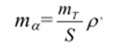

15-амалий иш Мавзу: Планда ўлчаш аниқлиги
Планда масофани топиш аниқлиги. А ва В нуқталар орасидаги АВ масофани аниқлигини баҳолайлик
(38.1-расм). Бизга маълумки, икки нуқта орасидаги масофа қуйидаги ифода ёрдамида ҳисобланиши
мумкин.
Хатолар назариясига асосан ўрта квадратик хатоликка ўтамиз,
1-расм. Планда масофани топиш аниқлигига оид
Агарда MA= MB = MT бўлса, ту тү бўлади.
Бундан кўриниб турибдики, икки нуқта координаталари ёрдамида ҳисобланган масофанинг
ўрта
квадратик хатолиги битта нуқта ҳолатининг ўрта квадратик хатолигига тенгдир.
Планда йўналишни топиш аниқлиги. Агарда А ва в нуқталар кооординаталари
XA, YA, XB, YB
планда аниқланган бўлса, AB йўналишнинг дирекцион бурчаги қуйидаги ифода орқали ҳисобланади:
Хатолар назариясига биноан буни қуйидаги кўринишга келтиришимиз
мумкин.
агарда мA = мБ = мk бўлса
бу ерда mт -планда нуқта ҳолатининг ўрта квадратик хатолиги.
Бурчак қиймати қуйидагича ёзилади:

Масалан: mт =0,3мм; S=100мм деб олсак,
бўлади.
Планда нисбий баландликни топиш аниқлиги. А ва В нуқталарнинг пландан олинган нд ва Hв
отметкалари орқали ҳисобланган нисбий баландлик ва нишаблик қуйидагича ифодаланади:
2-расм. Планда нисбий баландликни топиш аниқлигига оид.
Агарда Ава В нуқталар баландлиги бир хил аниқликда топилган бўлса, нисбий баландликнинг ўрта
квадратик хатолигини қуйидаги ифодадан фойдаланиб ҳисоблаш мумкин:
Майдонни ўлчаш аниқлиги. Профессор В. Маслов томонидан келтириб чиқарилган майдонни
ўлчаш аниқлигини баҳолаш ифодаси қуйидагича ифодаланади:
бу ерда; mт -томонлар узунлигини ўлчаш ўрта квадратик хатолиги;
Р-ўлчанадиган майдон қиймати;
K-майдон узунлигининг энига нисбати. Агарда тү=0,3мм ва Р = 2500мм2 бўлса,
бўлади.